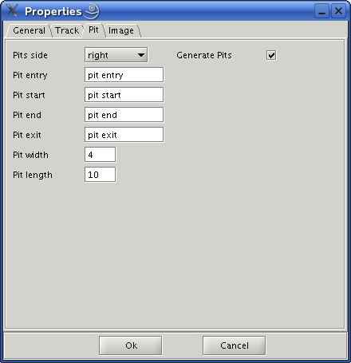

TrackEditor 0.6.x
TrackEditor is a track editor for the Torcs racing car simulator.
Installation/Execution
Rename the file Install-0.6.x.class to Install.class then run the command : java Install
The installer application will start, when ask you for destination directory point the directory in which torcs is installed. When installation is finished in the torcs directory would you find a directory named trackeditor and two files named trackeditor.bat and trackeditor.sh.
For Windows just run trackeditor.bat
For Linux before run the trackeditor.sh you have to make it executable with command : chmod +x trackeditor.sh (so far i dont know how to make a file executable from Java)
now you can run ./trackeditor.sh
Tutorial
Select File -> New and the new project dialog will appear.
Fill in the tabs and press OK. This will create a folder named mytrack under the /usr/share/games/torcs/tracks/road .
Note: that the path points to track category not to the track folder. The track folder always have the same name as the track.
A standard oval track will created, don t worry will change it later.
You can set a background image as a guide to make your track. Prepare a png image with your track layout, i prefer to make transparent image with white path for the track this way the same image can be used by Torcs . As you can see i put a thin red line to mark the start/finish line
Note: that the image must be square(eg. 128 by 128 pixels) in this example i make an image of 512 by 512 pixels. And the starting line must be a horizontal straight running from left to right.
Before you continue you have to calculate what the image width represents in meters in real world track. Let say that in our track the main straight is 800m i measure in image the main straight 333 pixels, now i divide 800m by 333 pixels and the result is about 2.4 metres per pixel, keep this value. Select File -> Properties a dialog with track properties will appear. select the Image tab, use the Browse button to select the image of track and at the Image scale field put the 2.4 and press Ok.
Select View->Show background.
Right click on the image and drag the image until to match the start lane to the beginning of the to straight
Click on the top straight segment the track segment will become red and a popup window with segment properties will appear.
Change the value to the Length field from 100 to 400. Then press the “add new straight” button, is the one with the green straight arrow, put the cursor at the end of first straight, the segment will become yellow and a blue square will appear in the end of segment, click here and a new straight segment will added between the straight and curve. Change the length to 150.
De select the “add new straight” button, click on the next curve and put 115 in the arc field and 55 in the Radius start and Radius end fields. Click on the next straight and change the length to 210. Click on the last curve and put Arc to 66 and Radius start and Radius end to 33 and mark on the left radio button on the top right of segment properties dialog.
Now the track look like this :
Add :
Straight length = 80
Right Curve Arc = 39, Radius start = 40, Radius end = 40
Straight length = 56
Right Curve Arc = 90, Radius start = 48, Radius end = 48
Straight length = 40
Right Curve Arc = 60, Radius start = 40, Radius end = 60
Right Curve Arc = 30, Radius start = 200, Radius end = 200
Straight length = 235
Left Curve Arc = 122.5, Radius start = 25, Radius end = 80
Straight length = 620
Right Curve Arc = 119, Radius start = 45, Radius end = 45
Straight length = 380
Right Curve Arc = 95.5, Radius start = 53, Radius end = 53
Straight length = 150
Straight length = 83
Now the track look like this :
If you wonder why i split the start finish straight in four segments instead of one long segment, the reason is to be able to make the pits which is what follows.Before we make the pits go to the first segment of the straight, the left one, and rename it to “pit entry” the next segment name it “pit start” the next name it “pit end” and the last one “pit exit”. To rename the segments is not mandatory i just put that name to be more understandable, you can just note what the names is, now go to File->Properties and select the Pit tab.
You can select if the pits will be in the left or the right side of track for now leave it to right, then you put the names of segments in the appropriate fields, in the pit width field put 4 and in the pit length field put 10. Check the Generate Pits checkbox and press OK.

This will adjust the sides of the segments to adapt with the pits, if you want to make this by hand just leave the Generate Pits unchecked.
Press File->Save and then File->Export->A3C this will create track 3D file.
This will take a while you have to wait, even it's look doing nothing until to see in the bottom of dialog the message : Track finished .
The track is ready, close the TrackEditor and run Torcs.
Here is a snapshot from the track.